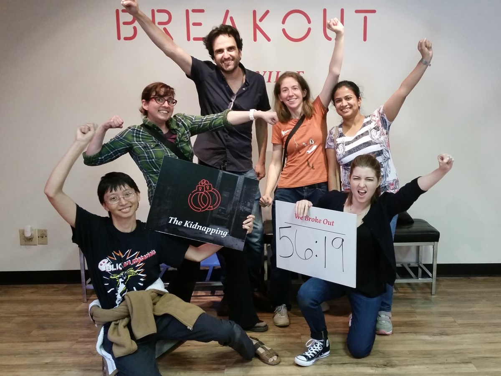

Erin Walter is currently an MA candidate of Interdisciplinary Computer Science at Mills College in Oakland, CA. She is a San Jose, CA native and has traveled to Guatemala and Europe. She has a background in video production and advertising, and is interested in human-computer interaction, full stack web development, and computer graphics. Her expected graduation is December 2017. Erin is looking forward to enhancing her skills in Python and meeting new people. Pronouns: She/Her/Hers. Email: ewalter at mills.edu
Erin's MentorSince 2012, Sophie has been an Assistant Professor at Clemson University. Her primary research interests are in computer graphics, especially animation and perception.
"I am also interested in machine learning, game design, neuroscience, and human-computer interaction. I received my PhD in 2011 from the Graphics, Vision and Visualization Group at Trinity College Dublin, Ireland, advised by Carol O'Sullivan. I then spent a year as a postdoctoral researcher at Carnegie Mellon's Graphics Lab working with Alla Safonova and Jessica Hodgins. During my PhD, I also conducted research as a visiting student in the Graphics Lab at Carnegie Mellon University and as an intern at Disney Research, Pittsburgh."
Character animation techniques and algorithms. "I am particularly interested in developing new animation techniques using motion capture, statistical properties and learning through databases."
Perception of lifelike virtual humans. "Humans are capable of successfully distinguishing between human and computer-generated motions, even if the differences are marginal. This skill makes it a challenge to produce convincing animations, especially for very realistic human-like virtual characters. I aim to determine which components of human motion are crucial to lifelike appearance and which errors diminish this realism."
Hand and finger motions. "Hand and finger motions are omnipresent in daily life. Nevertheless, virtual characters often lack convincing hand and finger motions. Capturing, analyzing, understanding, and automatically generating these subtle movements are topics I address in my research."
We will be working to evaluate the impact of errors in hand and finger motions. Hand and finger motions are extremely important in daily interactions, but they are difficult to capture, so in computer animation they are typically created manually. At Clemson, we are working on developing algorithms to automatically create finger motions. One part of that project is to find out the impact of different types of errors on our perception of hand and finger motions.
I'm not in Cali anymore! This week was filled with acclimating to all that is South Carolina. The heat and humidity, of course, are the most notable differences. I arrived and my dorm was very sparse, but luckily everyone has been incredibly helpful and friendly. I am also very thankful for Publix Market, which has all the necessities and kitchen items I needed to get settled. The first week I met with my mentor and fellow researchers. I spent the majority reading literature, mainly on related works in distance metrics and human perception exprimentation and evaluation. I did not anticipate the related works to involve so much machine learning, but I am excited to learn more on the topic and learn how to code and compute distance metric algorithms using Python. I also learned about the motion capture post-processing step, which includes the tedious task of manual marker labeling. My research aims to improve the motion capture post-processing step by adding data-driven synthesis for hand gestures, adding to the efficiency of animations, and improving human perception of finger motions.
As a group we went to an escape room in nearby Greenville to do research for future VR projects, but also because escape rooms are really fun. It was my first time participating in an escape room, and I hope it will not be my last.
Here is a photo of us celebrating our victory after escaping the evil kidnapper:
This week consisted of getting to know the Vicon Blade system in depth. Vicon Blade is a motion capture software used to both capture data and post process it. I am getting more comfortable with the software, and realizing how important it is to maintain a consistent workflow and understand how the algorithms work.
I am excited to continue working on my project, as we near closer to a motion capture setup and debugging. I will also be working more on solidifying distance metric features that will be incorporated into our experiment design. Next week the other REU student is coming. She is from California and I am very excited to meet her!
I also spent the weekend planning my upcoming 4th of July trip to Asheville, NC, which is a two hour drive. I am excited to explore the surrounding mountain regions.
{kind=link}
{kind=link}